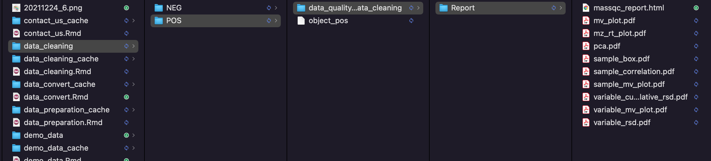
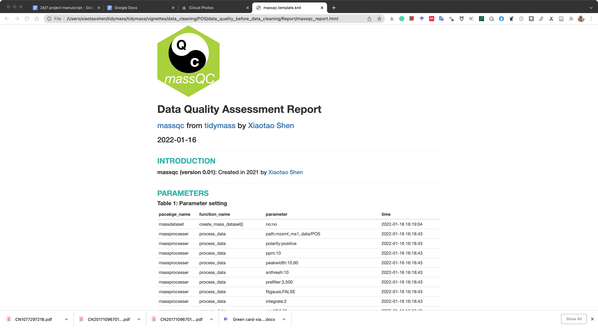
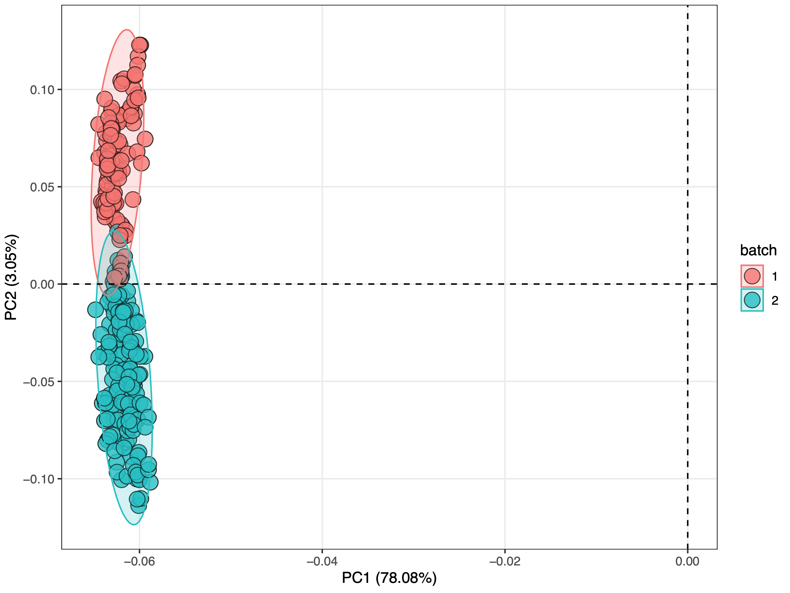
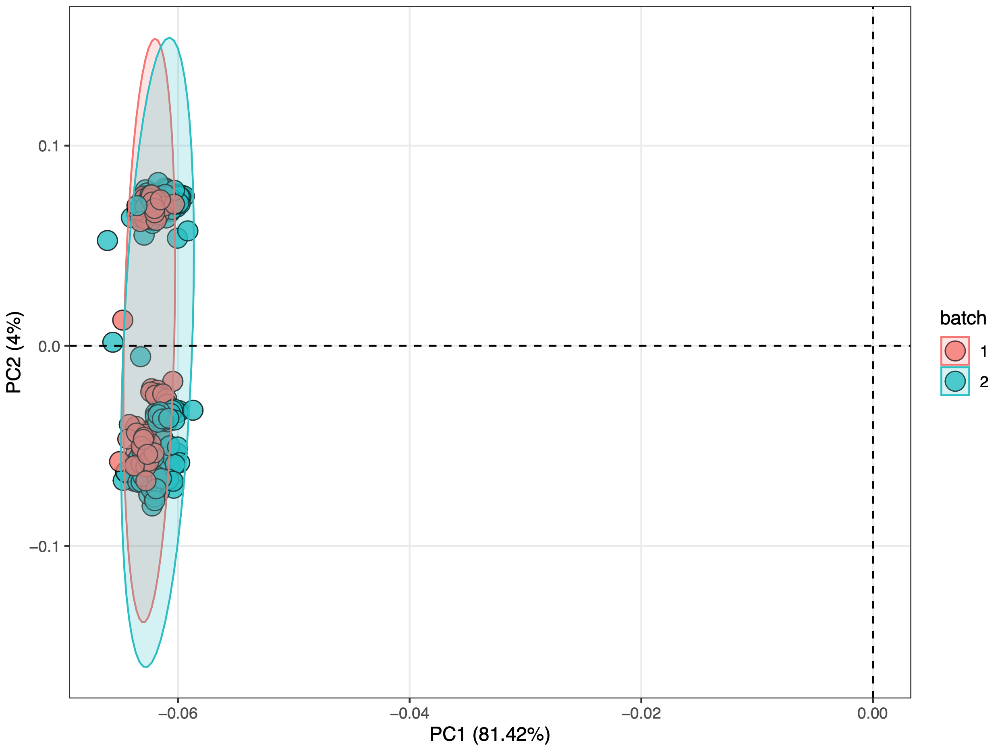
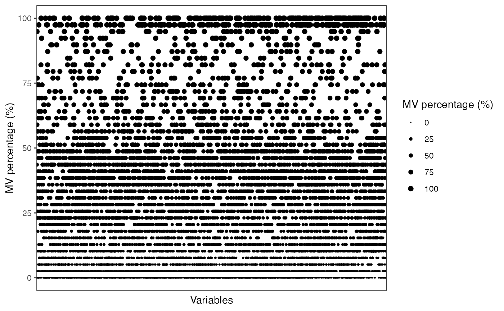
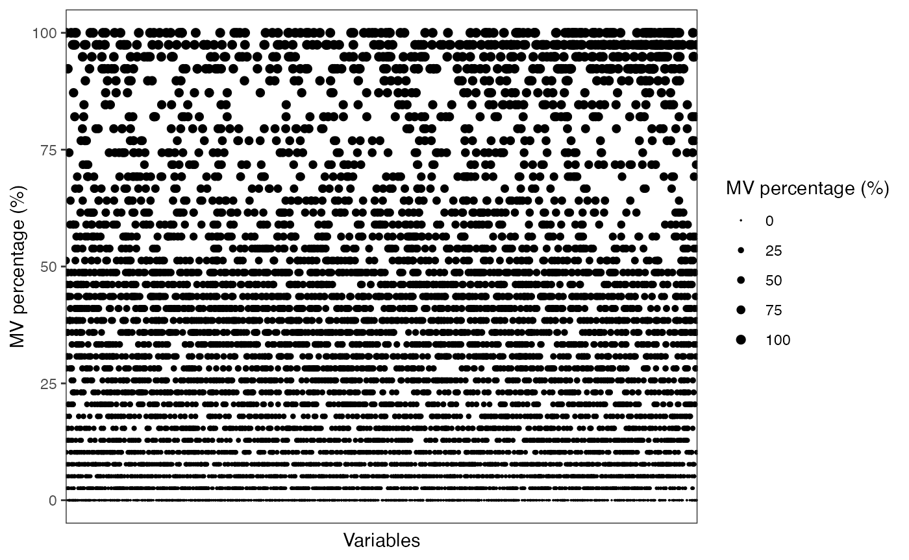
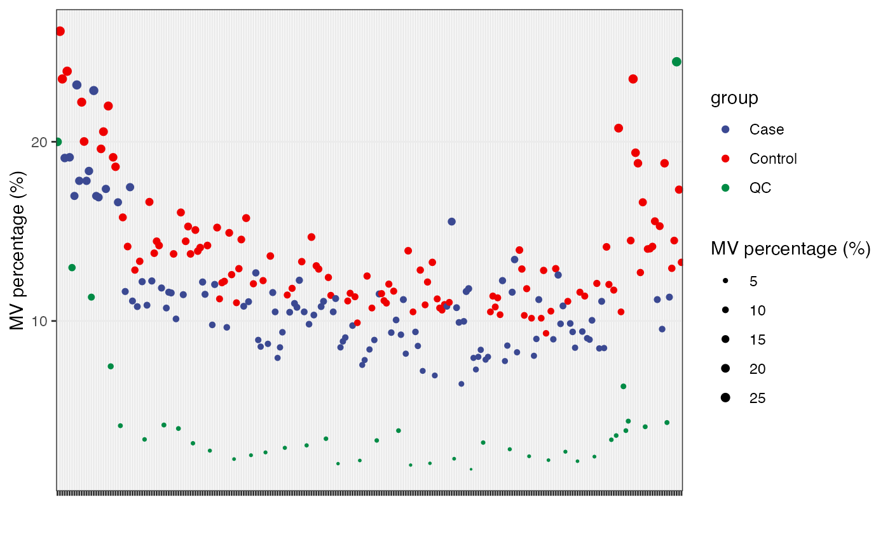
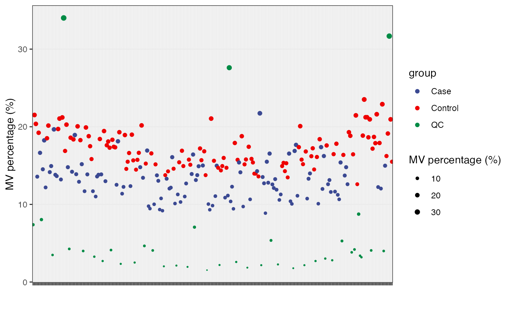
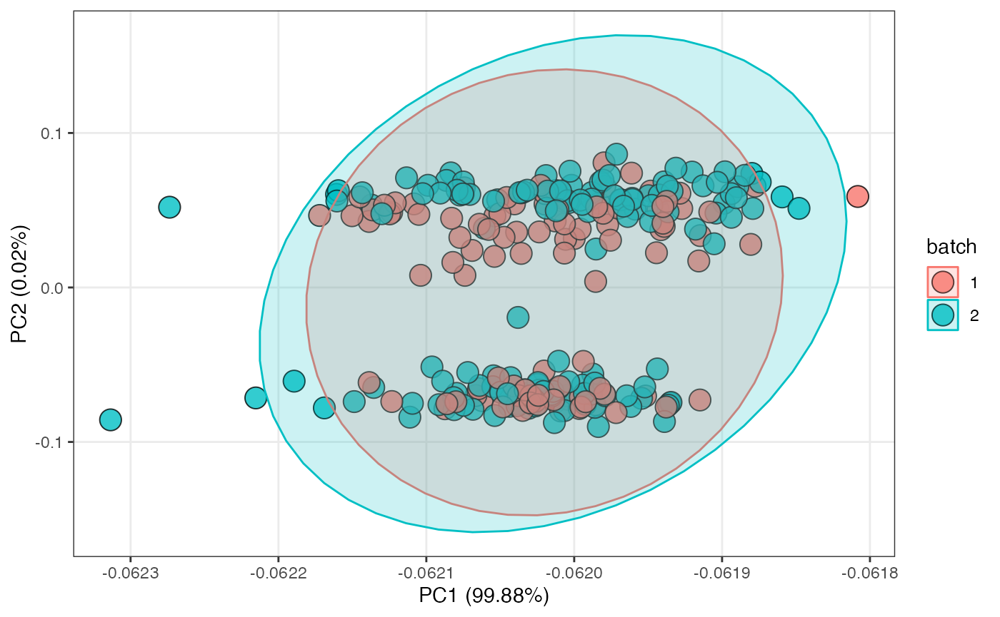
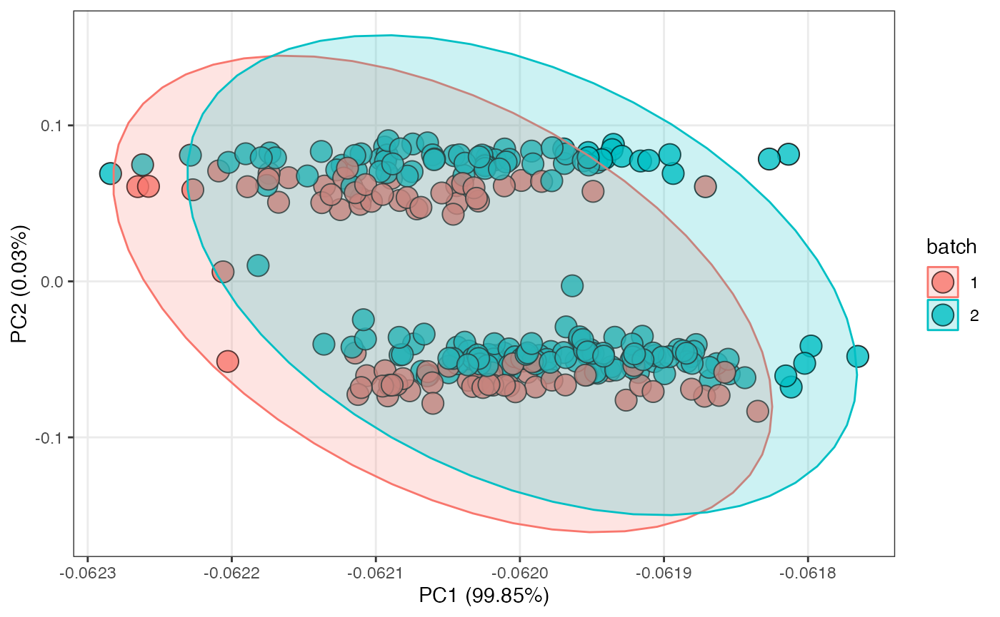

Data cleaning
Xiaotao Shen (https://www.shenxt.info/)
Created on 2021-12-04 and updated on 2022-02-22
data_cleaning.RmdData preparation
We just use the dataset which are from this step.
library(tidymass)
#> ── Attaching packages ──────────────────────────────────────── tidymass 0.0.1 ──
#> ✓ massdataset 0.99.1 ✓ metpath 0.0.1
#> ✓ massprocesser 0.9.2 ✓ metid 1.1.0
#> ✓ masscleaner 0.9.2 ✓ masstools 0.99.1
#> ✓ massqc 0.0.1 ✓ dplyr 1.0.7
#> ✓ massstat 0.0.1 ✓ ggplot2 3.3.5
#> ── Conflicts ─────────────────────────────────────────── tidymass_conflicts() ──
#> x dplyr::collect() masks xcms::collect()
#> x dplyr::combine() masks MSnbase::combine(), Biobase::combine(), BiocGenerics::combine()
#> x dplyr::filter() masks metpath::filter(), massdataset::filter(), stats::filter()
#> x dplyr::first() masks S4Vectors::first()
#> x masstools::get_os() masks tinytools::get_os()
#> x masstools::getDP() masks tinytools::getDP()
#> x dplyr::groups() masks xcms::groups()
#> x masstools::keep_one() masks tinytools::keep_one()
#> x dplyr::lag() masks stats::lag()
#> x masstools::ms2_plot() masks tinytools::ms2_plot()
#> x masstools::ms2Match() masks tinytools::ms2Match()
#> x masstools::mz_rt_match() masks tinytools::mz_rt_match(), massdataset::mz_rt_match()
#> x masstools::name_duplicated() masks tinytools::name_duplicated()
#> x masstools::read_mgf() masks metid::read_mgf(), tinytools::read_mgf()
#> x masstools::removeNoise() masks tinytools::removeNoise()
#> x dplyr::rename() masks S4Vectors::rename(), massdataset::rename()
#> x masstools::setwd_project() masks tinytools::setwd_project()
#> x masstools::split_formula() masks tinytools::split_formula()
#> x masstools::trans_ID() masks tinytools::trans_ID()
#> x masstools::trans_id_database() masks tinytools::trans_id_database()
load("data_cleaning/POS/object_pos")
load("data_cleaning/NEG/object_neg")Change batch to character.
object_pos <-
object_pos %>%
activate_mass_dataset(what = "sample_info") %>%
dplyr::mutate(batch = as.character(batch))
object_neg <-
object_neg %>%
activate_mass_dataset(what = "sample_info") %>%
dplyr::mutate(batch = as.character(batch))
object_pos
#> --------------------
#> massdataset version: 0.99.1
#> --------------------
#> 1.expression_data:[ 10149 x 259 data.frame]
#> 2.sample_info:[ 259 x 6 data.frame]
#> 3.variable_info:[ 10149 x 3 data.frame]
#> 4.sample_info_note:[ 6 x 2 data.frame]
#> 5.variable_info_note:[ 3 x 2 data.frame]
#> 6.ms2_data:[ 0 variables x 0 MS2 spectra]
#> --------------------
#> Processing information (extract_process_info())
#> create_mass_dataset ----------
#> Package Function.used Time
#> 1 massdataset create_mass_dataset() 2022-01-16 16:19:04
#> process_data ----------
#> Package Function.used Time
#> 1 massprocesser process_data 2022-01-16 16:18:43
#> mutate ----------
#> Package Function.used Time
#> 1 massdataset mutate() 2022-01-16 23:48:08
object_neg
#> --------------------
#> massdataset version: 0.99.1
#> --------------------
#> 1.expression_data:[ 8804 x 259 data.frame]
#> 2.sample_info:[ 259 x 6 data.frame]
#> 3.variable_info:[ 8804 x 3 data.frame]
#> 4.sample_info_note:[ 6 x 2 data.frame]
#> 5.variable_info_note:[ 3 x 2 data.frame]
#> 6.ms2_data:[ 0 variables x 0 MS2 spectra]
#> --------------------
#> Processing information (extract_process_info())
#> create_mass_dataset ----------
#> Package Function.used Time
#> 1 massdataset create_mass_dataset() 2022-01-16 16:20:02
#> process_data ----------
#> Package Function.used Time
#> 1 massprocesser process_data 2022-01-16 16:19:48
#> mutate ----------
#> Package Function.used Time
#> 1 massdataset mutate() 2022-01-16 23:48:08Data quality assessment before data cleaning
Here, we can use the massqc package to assess the data quality.
We can just use the massqc_report() function to get a html format quality assessment report.
massqc::massqc_report(object = object_pos,
path = "data_cleaning/POS/data_quality_before_data_cleaning")A html format report and pdf figures will be placed in the folder data_cleaning/POS/data_quality_before_data_cleaning/Report.

The html report is below:

Negative mode.
massqc::massqc_report(object = object_neg,
path = "data_cleaning/NEG/data_quality_before_data_cleaning")The PCA score plot is used to show the batch effect of positive and negative dataset.
Positive mode:
 Negative mode:

We can see that no matter in positive and negative mode, batch effect is serious.
Remove noisy metabolic features
Remove variables which have MVs in more than 20% QC samples and in at lest 50% samples in control group or case group.
Positive mode
object_pos %>%
activate_mass_dataset(what = "sample_info") %>%
dplyr::count(group)
#> group n
#> 1 Case 110
#> 2 Control 110
#> 3 QC 39MV percentage in QC samples.
show_variable_missing_values(object = object_pos %>%
activate_mass_dataset(what = "sample_info") %>%
filter(class == "QC"),
percentage = TRUE) +
scale_size_continuous(range = c(0.01, 2))
qc_id =
object_pos %>%
activate_mass_dataset(what = "sample_info") %>%
filter(class == "QC") %>%
pull(sample_id)
control_id =
object_pos %>%
activate_mass_dataset(what = "sample_info") %>%
filter(group == "Control") %>%
pull(sample_id)
case_id =
object_pos %>%
activate_mass_dataset(what = "sample_info") %>%
filter(group == "Case") %>%
pull(sample_id)
object_pos =
object_pos %>%
mutate_variable_na_freq(according_to_samples = qc_id) %>%
mutate_variable_na_freq(according_to_samples = control_id) %>%
mutate_variable_na_freq(according_to_samples = case_id)
head(extract_variable_info(object_pos))
#> variable_id mz rt na_freq na_freq.1 na_freq.2
#> 1 M70T73_POS 70.04074 73.31705 0.28205128 0.6000000 0.4727273
#> 2 M70T53_POS 70.06596 52.78542 0.00000000 0.1454545 0.0000000
#> 3 M70T183_POS 70.19977 182.87981 0.00000000 0.6636364 0.7454545
#> 4 M70T527_POS 70.36113 526.76657 0.02564103 0.1818182 0.3000000
#> 5 M71T695_POS 70.56911 694.84592 0.02564103 0.6454545 0.5545455
#> 6 M71T183_POS 70.75034 182.77790 0.05128205 0.7272727 0.7909091Remove variables.
object_pos <-
object_pos %>%
activate_mass_dataset(what = "variable_info") %>%
filter(na_freq < 0.2 & (na_freq.1 < 0.5 | na_freq.2 < 0.5))
object_pos
#> --------------------
#> massdataset version: 0.99.1
#> --------------------
#> 1.expression_data:[ 5101 x 259 data.frame]
#> 2.sample_info:[ 259 x 6 data.frame]
#> 3.variable_info:[ 5101 x 6 data.frame]
#> 4.sample_info_note:[ 6 x 2 data.frame]
#> 5.variable_info_note:[ 6 x 2 data.frame]
#> 6.ms2_data:[ 0 variables x 0 MS2 spectra]
#> --------------------
#> Processing information (extract_process_info())
#> create_mass_dataset ----------
#> Package Function.used Time
#> 1 massdataset create_mass_dataset() 2022-01-16 16:19:04
#> process_data ----------
#> Package Function.used Time
#> 1 massprocesser process_data 2022-01-16 16:18:43
#> mutate ----------
#> Package Function.used Time
#> 1 massdataset mutate() 2022-01-16 23:48:08
#> mutate_variable_na_freq ----------
#> Package Function.used Time
#> 1 massdataset mutate_variable_na_freq() 2022-01-18 09:11:43
#> 2 massdataset mutate_variable_na_freq() 2022-01-18 09:11:43
#> 3 massdataset mutate_variable_na_freq() 2022-01-18 09:11:43
#> filter ----------
#> Package Function.used Time
#> 1 massdataset filter() 2022-01-18 09:11:44Only 5101 variables left.
Negative mode
object_neg %>%
activate_mass_dataset(what = "sample_info") %>%
dplyr::count(group)
#> group n
#> 1 Case 110
#> 2 Control 110
#> 3 QC 39MV percentage in QC samples.
show_variable_missing_values(object = object_neg %>%
activate_mass_dataset(what = "sample_info") %>%
filter(class == "QC"),
percentage = TRUE) +
scale_size_continuous(range = c(0.01, 2))
qc_id =
object_neg %>%
activate_mass_dataset(what = "sample_info") %>%
filter(class == "QC") %>%
pull(sample_id)
control_id =
object_neg %>%
activate_mass_dataset(what = "sample_info") %>%
filter(group == "Control") %>%
pull(sample_id)
case_id =
object_neg %>%
activate_mass_dataset(what = "sample_info") %>%
filter(group == "Case") %>%
pull(sample_id)
object_neg =
object_neg %>%
mutate_variable_na_freq(according_to_samples = qc_id) %>%
mutate_variable_na_freq(according_to_samples = control_id) %>%
mutate_variable_na_freq(according_to_samples = case_id)
head(extract_variable_info(object_neg))
#> variable_id mz rt na_freq na_freq.1 na_freq.2
#> 1 M70T712_NEG 70.05911 711.97894 0.05128205 0.109090909 0.018181818
#> 2 M70T527_NEG 70.13902 526.85416 0.33333333 0.509090909 0.618181818
#> 3 M70T587_NEG 70.31217 587.25330 0.00000000 0.009090909 0.009090909
#> 4 M70T47_NEG 70.33835 46.57537 0.84615385 0.936363636 0.090909091
#> 5 M71T587_NEG 70.56315 587.02570 0.17948718 0.145454545 0.163636364
#> 6 M71T641_NEG 70.70657 641.16672 0.10256410 0.063636364 0.072727273Remove variables.
object_neg <-
object_neg %>%
activate_mass_dataset(what = "variable_info") %>%
filter(na_freq < 0.2 & (na_freq.1 < 0.5 | na_freq.2 < 0.5))
object_neg
#> --------------------
#> massdataset version: 0.99.1
#> --------------------
#> 1.expression_data:[ 4104 x 259 data.frame]
#> 2.sample_info:[ 259 x 6 data.frame]
#> 3.variable_info:[ 4104 x 6 data.frame]
#> 4.sample_info_note:[ 6 x 2 data.frame]
#> 5.variable_info_note:[ 6 x 2 data.frame]
#> 6.ms2_data:[ 0 variables x 0 MS2 spectra]
#> --------------------
#> Processing information (extract_process_info())
#> create_mass_dataset ----------
#> Package Function.used Time
#> 1 massdataset create_mass_dataset() 2022-01-16 16:20:02
#> process_data ----------
#> Package Function.used Time
#> 1 massprocesser process_data 2022-01-16 16:19:48
#> mutate ----------
#> Package Function.used Time
#> 1 massdataset mutate() 2022-01-16 23:48:08
#> mutate_variable_na_freq ----------
#> Package Function.used Time
#> 1 massdataset mutate_variable_na_freq() 2022-01-18 09:11:47
#> 2 massdataset mutate_variable_na_freq() 2022-01-18 09:11:47
#> 3 massdataset mutate_variable_na_freq() 2022-01-18 09:11:47
#> filter ----------
#> Package Function.used Time
#> 1 massdataset filter() 2022-01-18 09:11:474104 features left.
Filter outlier samples
We can use the detect_outlier() to find the outlier samples.
More information about how to detect outlier samples can be found here.
Positive mode
massdataset::show_sample_missing_values(object = object_pos,
color_by = "group",
order_by = "injection.order",
percentage = TRUE) +
theme(axis.text.x = element_text(size = 2)) +
scale_size_continuous(range = c(0.1, 2)) +
ggsci::scale_color_aaas()
Detect outlier samples.
outlier_samples =
object_pos %>%
`+`(1) %>%
log(2) %>%
scale() %>%
detect_outlier()
outlier_samples
#> --------------------
#> masscleaner
#> --------------------
#> 1 according_to_na : 0 outlier samples.
#> 2 according_to_pc_sd : 0 outlier samples.
#> 3 according_to_pc_mad : 0 outlier samples.
#> 4 accordint_to_distance : 0 outlier samples.
#> extract all outlier table using extract_outlier_table()
#>
outlier_table <-
extract_outlier_table(outlier_samples)
outlier_table %>%
head()
#> according_to_na pc_sd pc_mad accordint_to_distance
#> sample_06 FALSE FALSE FALSE FALSE
#> sample_103 FALSE FALSE FALSE FALSE
#> sample_11 FALSE FALSE FALSE FALSE
#> sample_112 FALSE FALSE FALSE FALSE
#> sample_117 FALSE FALSE FALSE FALSE
#> sample_12 FALSE FALSE FALSE FALSE
outlier_table %>%
apply(1, function(x){
sum(x)
}) %>%
`>`(0) %>%
which()
#> named integer(0)No outlier samples in positive mode.
Negative mode
massdataset::show_sample_missing_values(object = object_neg,
color_by = "group",
order_by = "injection.order",
percentage = TRUE) +
theme(axis.text.x = element_text(size = 2)) +
scale_size_continuous(range = c(0.1, 2)) +
ggsci::scale_color_aaas()
Detect outlier samples.
outlier_samples =
object_neg %>%
`+`(1) %>%
log(2) %>%
scale() %>%
detect_outlier()
outlier_samples
#> --------------------
#> masscleaner
#> --------------------
#> 1 according_to_na : 0 outlier samples.
#> 2 according_to_pc_sd : 0 outlier samples.
#> 3 according_to_pc_mad : 0 outlier samples.
#> 4 accordint_to_distance : 0 outlier samples.
#> extract all outlier table using extract_outlier_table()
#>
outlier_table <-
extract_outlier_table(outlier_samples)
outlier_table %>%
head()
#> according_to_na pc_sd pc_mad accordint_to_distance
#> sample_06 FALSE FALSE FALSE FALSE
#> sample_103 FALSE FALSE FALSE FALSE
#> sample_11 FALSE FALSE FALSE FALSE
#> sample_112 FALSE FALSE FALSE FALSE
#> sample_117 FALSE FALSE FALSE FALSE
#> sample_12 FALSE FALSE FALSE FALSE
outlier_table %>%
apply(1, function(x){
sum(x)
}) %>%
`>`(0) %>%
which()
#> named integer(0)No outlier samples in negative mode.
Missing value imputation
get_mv_number(object_pos)
#> [1] 148965
object_pos <-
impute_mv(object = object_pos, method = "knn")
#> Cluster size 4983 broken into 88 4895
#> Done cluster 88
#> Cluster size 4895 broken into 4497 398
#> Cluster size 4497 broken into 3737 760
#> Cluster size 3737 broken into 2703 1034
#> Cluster size 2703 broken into 1706 997
#> Cluster size 1706 broken into 1240 466
#> Done cluster 1240
#> Done cluster 466
#> Done cluster 1706
#> Done cluster 997
#> Done cluster 2703
#> Done cluster 1034
#> Done cluster 3737
#> Done cluster 760
#> Done cluster 4497
#> Done cluster 398
#> Done cluster 4895
get_mv_number(object_pos)
#> [1] 0
get_mv_number(object_neg)
#> [1] 146427
object_neg <-
impute_mv(object = object_neg, method = "knn")
#> Cluster size 4006 broken into 3965 41
#> Cluster size 3965 broken into 3743 222
#> Cluster size 3743 broken into 505 3238
#> Done cluster 505
#> Cluster size 3238 broken into 2519 719
#> Cluster size 2519 broken into 1721 798
#> Cluster size 1721 broken into 676 1045
#> Done cluster 676
#> Done cluster 1045
#> Done cluster 1721
#> Done cluster 798
#> Done cluster 2519
#> Done cluster 719
#> Done cluster 3238
#> Done cluster 3743
#> Done cluster 222
#> Done cluster 3965
#> Done cluster 41
get_mv_number(object_neg)
#> [1] 0Positive mode
object_pos <-
normalize_data(object_pos, method = "median")
object_pos2 <-
integrate_data(object_pos, method = "subject_median")
object_pos2 %>%
`+`(1) %>%
log(2) %>%
massqc::massqc_pca(color_by = "batch", line = FALSE)
Negative mode
object_neg <-
normalize_data(object_neg, method = "median")
object_neg2 <-
integrate_data(object_neg, method = "subject_median")
object_neg2 %>%
`+`(1) %>%
log(2) %>%
massqc::massqc_pca(color_by = "batch", line = FALSE)
Save data for next analysis.
Session information
sessionInfo()
#> R Under development (unstable) (2022-01-11 r81473)
#> Platform: x86_64-apple-darwin17.0 (64-bit)
#> Running under: macOS Big Sur/Monterey 10.16
#>
#> Matrix products: default
#> BLAS: /Library/Frameworks/R.framework/Versions/4.2/Resources/lib/libRblas.0.dylib
#> LAPACK: /Library/Frameworks/R.framework/Versions/4.2/Resources/lib/libRlapack.dylib
#>
#> locale:
#> [1] en_US.UTF-8/en_US.UTF-8/en_US.UTF-8/C/en_US.UTF-8/en_US.UTF-8
#>
#> attached base packages:
#> [1] stats4 stats graphics grDevices utils datasets methods
#> [8] base
#>
#> other attached packages:
#> [1] knitr_1.37 masstools_0.99.1 dplyr_1.0.7
#> [4] metid_1.1.0 metpath_0.0.1 massstat_0.0.1
#> [7] ggfortify_0.4.14 ggplot2_3.3.5 massqc_0.0.1
#> [10] masscleaner_0.9.2 xcms_3.17.1 MSnbase_2.21.3
#> [13] ProtGenerics_1.27.2 S4Vectors_0.33.10 mzR_2.29.1
#> [16] Rcpp_1.0.7 Biobase_2.55.0 BiocGenerics_0.41.2
#> [19] BiocParallel_1.29.10 massprocesser_0.9.2 magrittr_2.0.1
#> [22] tinytools_0.9.1 massdataset_0.99.1 tidymass_0.0.1
#>
#> loaded via a namespace (and not attached):
#> [1] ragg_1.2.1 tidyr_1.1.4
#> [3] missForest_1.4 DelayedArray_0.21.2
#> [5] data.table_1.14.2 KEGGREST_1.35.0
#> [7] RCurl_1.98-1.5 doParallel_1.0.16
#> [9] generics_0.1.1 leaflet_2.0.4.1
#> [11] preprocessCore_1.57.0 callr_3.7.0
#> [13] usethis_2.1.5 RANN_2.6.1
#> [15] proxy_0.4-26 future_1.23.0
#> [17] tzdb_0.2.0 xml2_1.3.3
#> [19] lubridate_1.8.0 ggsci_2.9
#> [21] SummarizedExperiment_1.25.3 assertthat_0.2.1
#> [23] tidyverse_1.3.1 viridis_0.6.2
#> [25] xfun_0.29 hms_1.1.1
#> [27] jquerylib_0.1.4 evaluate_0.14
#> [29] DEoptimR_1.0-10 fansi_1.0.0
#> [31] dbplyr_2.1.1 readxl_1.3.1
#> [33] igraph_1.2.6 DBI_1.1.2
#> [35] htmlwidgets_1.5.4 MsFeatures_1.3.0
#> [37] purrr_0.3.4 ellipsis_0.3.2
#> [39] crosstalk_1.2.0 backports_1.4.1
#> [41] ggcorrplot_0.1.3 MatrixGenerics_1.7.0
#> [43] vctrs_0.3.8 remotes_2.4.2
#> [45] cachem_1.0.6 withr_2.4.3
#> [47] ggforce_0.3.3 itertools_0.1-3
#> [49] robustbase_0.93-8 prettyunits_1.1.1
#> [51] cluster_2.1.2 lazyeval_0.2.2
#> [53] crayon_1.4.2 pkgconfig_2.0.3
#> [55] labeling_0.4.2 tweenr_1.0.2
#> [57] GenomeInfoDb_1.31.1 pkgload_1.2.4
#> [59] devtools_2.4.3 rlang_0.4.12
#> [61] globals_0.14.0 lifecycle_1.0.1
#> [63] affyio_1.65.0 MassSpecWavelet_1.61.0
#> [65] modelr_0.1.8 cellranger_1.1.0
#> [67] randomForest_4.6-14 rprojroot_2.0.2
#> [69] polyclip_1.10-0 matrixStats_0.61.0
#> [71] Matrix_1.4-0 reprex_2.0.1
#> [73] GlobalOptions_0.1.2 processx_3.5.2
#> [75] png_0.1-7 viridisLite_0.4.0
#> [77] rjson_0.2.21 clisymbols_1.2.0
#> [79] bitops_1.0-7 pander_0.6.4
#> [81] Biostrings_2.63.1 shape_1.4.6
#> [83] stringr_1.4.0 parallelly_1.30.0
#> [85] robust_0.6-1 readr_2.1.1
#> [87] gridGraphics_0.5-1 scales_1.1.1
#> [89] memoise_2.0.1 plyr_1.8.6
#> [91] zlibbioc_1.41.0 compiler_4.2.0
#> [93] RColorBrewer_1.1-2 pcaMethods_1.87.0
#> [95] clue_0.3-60 rrcov_1.6-0
#> [97] cli_3.1.0 affy_1.73.0
#> [99] XVector_0.35.0 listenv_0.8.0
#> [101] patchwork_1.1.1 pbapply_1.5-0
#> [103] ps_1.6.0 MASS_7.3-55
#> [105] tidyselect_1.1.1 vsn_3.63.0
#> [107] stringi_1.7.6 forcats_0.5.1
#> [109] textshaping_0.3.6 highr_0.9
#> [111] yaml_2.2.1 MALDIquant_1.21
#> [113] ggrepel_0.9.1 grid_4.2.0
#> [115] sass_0.4.0 tools_4.2.0
#> [117] parallel_4.2.0 circlize_0.4.14
#> [119] rstudioapi_0.13 MsCoreUtils_1.7.1
#> [121] foreach_1.5.1 gridExtra_2.3
#> [123] farver_2.1.0 mzID_1.33.0
#> [125] ggraph_2.0.5 digest_0.6.29
#> [127] BiocManager_1.30.16 GenomicRanges_1.47.6
#> [129] broom_0.7.11 ncdf4_1.17
#> [131] httr_1.4.2 ComplexHeatmap_2.11.0
#> [133] colorspace_2.0-2 rvest_1.0.2
#> [135] XML_3.99-0.8 fs_1.5.2
#> [137] IRanges_2.29.1 yulab.utils_0.0.4
#> [139] pkgdown_2.0.1 graphlayouts_0.8.0
#> [141] ggplotify_0.1.0 plotly_4.10.0
#> [143] sessioninfo_1.2.2 systemfonts_1.0.3
#> [145] fit.models_0.64 jsonlite_1.7.2
#> [147] tidygraph_1.2.0 testthat_3.1.1
#> [149] R6_2.5.1 pillar_1.6.4
#> [151] htmltools_0.5.2 glue_1.6.0
#> [153] fastmap_1.1.0 class_7.3-20
#> [155] codetools_0.2-18 pkgbuild_1.3.1
#> [157] pcaPP_1.9-74 mvtnorm_1.1-2
#> [159] furrr_0.2.3 utf8_1.2.2
#> [161] lattice_0.20-45 bslib_0.3.1
#> [163] tibble_3.1.6 zip_2.2.0
#> [165] openxlsx_4.2.5 limma_3.51.2
#> [167] rmarkdown_2.11 desc_1.4.0
#> [169] munsell_0.5.0 e1071_1.7-9
#> [171] GetoptLong_1.0.5 GenomeInfoDbData_1.2.7
#> [173] iterators_1.0.13 impute_1.69.0
#> [175] haven_2.4.3 gtable_0.3.0